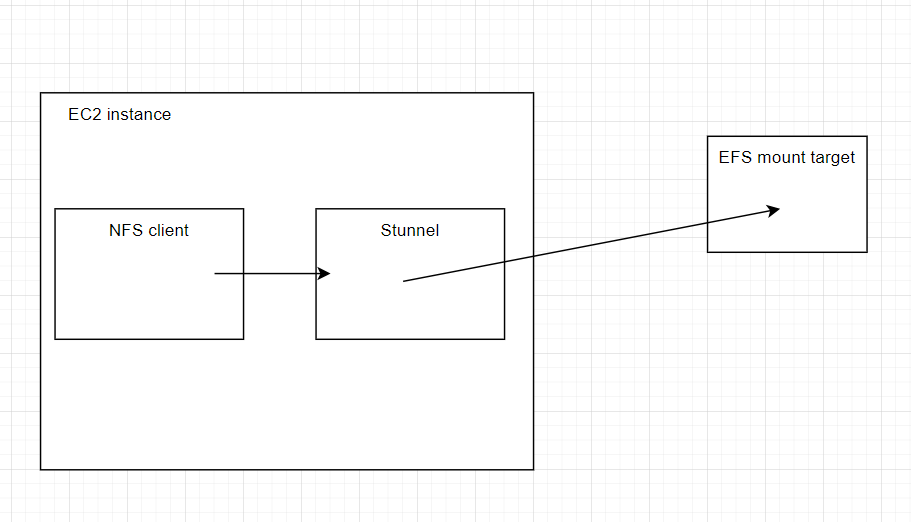
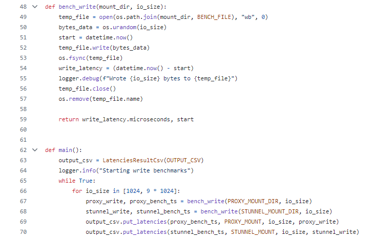
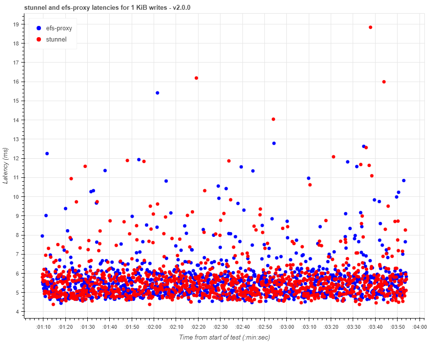
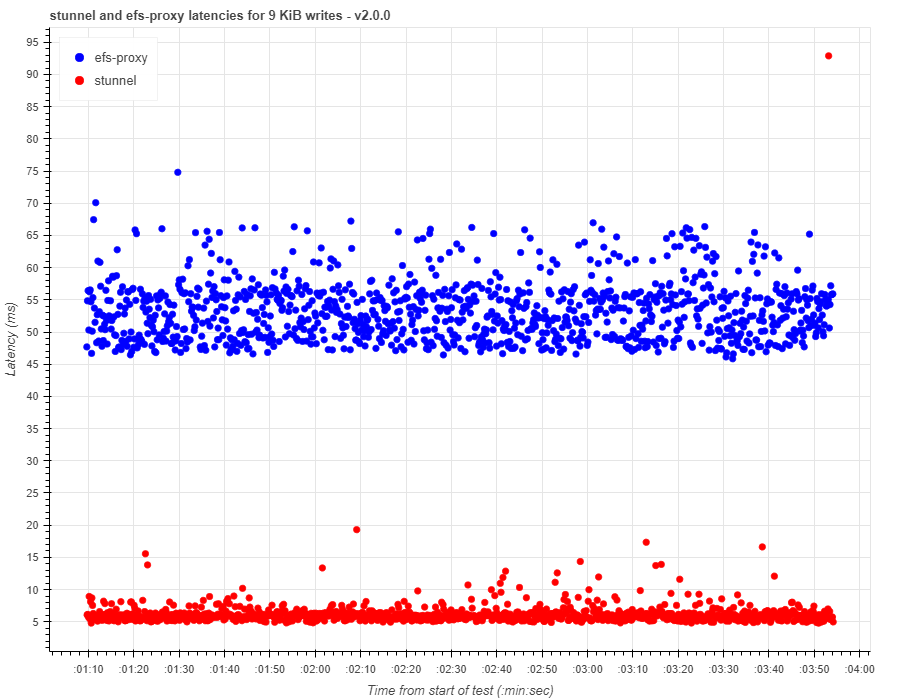
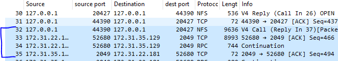
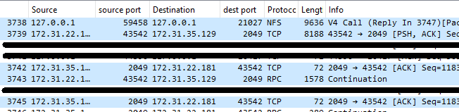
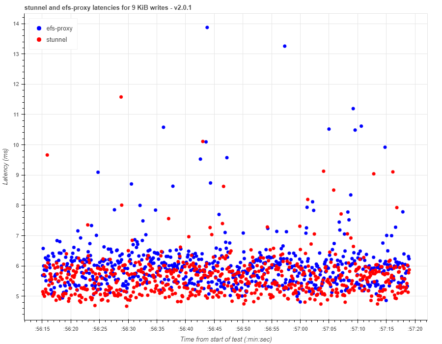

05/27/2024
Amazon-efs-utils v2.0.0 and 9 KiB writes
Just a quick disclaimer: I wrote this article and conducted these experiments in my free-time, apart from my role at Amazon. All opinions here are my own.
Amazon-efs-utils is open source, and everything mentioned in this article is publicly available information.
The goal of this article is to show the effect of Nagle's algorithm and to describe how it works via an example.
Amazon-efs-utils is a client-side mount utility that establishes
NFS mounts to EFS file systems. Historically, this utility's main purpose was to encrypt NFS traffic before
forwarding it to EFS. To achieve this, the utility would redirect NFS mounts to a local
stunnel process, which
would encrypt NFS traffic and forward it to EFS.

In April 2024,
we released amazon-efs-utils v2.0.0.
The v2.0.0 release introduced a new component, efs-proxy, which replaced stunnel and
enabled us to
increase the per-client throughput limit from 500 MiBps to 1500 MiBps.
Like stunnel, efs-proxy receives NFS traffic from the local NFS client, and then forwards it to EFS.
Shortly after releasing v2.0.0, it was brought to our attention that we could further optimize the performance
of a subset of workloads using efs-proxy.
I emulated one of these workloads with
this Python script:

It performs 1 KiB writes, and then 9 KiB writes. These writes happen sequentially,
so there is only every one IO request in flight at any given time.
I tested this workload against a mount with the older version of efs-utils that used stunnel,
and the newer version of efs-utils, which used efs-proxy.
Here are the workload test results for 1 KiB write latencies between efs-proxy and stunnel:

Write latencies were consistent between stunnel and efs-proxy for 1 KiB writes. However, this was not the case with 9 KiB writes.

Write latencies with efs-proxy were between 45-65 ms, which is higher than what we were seeing with stunnel.
What's going on here, and is there anything we can do to bring these latencies with efs-proxy down?
Let's look at a packet capture that I took while running the 9 KiB workloads.
Here are packets sent over the wire when using an EFS mount with stunnel:

Packet #32 is the NFS write operation sent from the NFS client over the loopback interface to stunnel.
We can see that it's contained within a single TCP segment of 9636 bytes.
Packet #33 and #34 are the TCP segments that stunnel sends to EFS.
The
MTU on my network interface
is 9001 bytes. The
TCP max segment size
must be slightly lower than the MTU. This limit requires the client to split up our NFS write into two TCP segments - #33 and #34.
The packet capture shows us that stunnel sent the two packets in parallel, and then EFS acknowledged both TCP segments
with a single ACK in #35.
Let's compare this behavior with efs-proxy. Here is the packet capture for the same NFS write, but sent over efs-proxy:

Packet #3738 is the NFS write operation sent from the NFS client over the loopback interface to efs-proxy.
As was the case earlier, the NFS write is split into two packets - Packet #3739 and #3743 are the TCP segments that efs-proxy sends to EFS.
However, with efs-proxy, these segments are not sent in parallel. Instead, the client sends the first segment,
and waits for an acknowledgement from EFS before it sends the second segment.
Therefore, we've added an extra network round trip in the path of fulfilling our NFS write operation.
Why is efs-proxy not sending these TCP segments in parallel?
As Marc Brooker, a distinguished engineer at AWS wrote,
"It's always TCP_NODELAY".
Nagle's algorithm and NFS
Nagle's algorithm is defined in
RFC 896 - Congestion Control in IP/TCP Internetworks.
As Marc pointed out, Nagle was concerned with applications like Telnet that saturated
networks with small packets. From the RFC:
"There is a special problem associated with small packets. When
TCP is used for the transmission of single-character messages
originating at a keyboard, the typical result is that 41 byte
packets (one byte of data, 40 bytes of header) are transmitted
for each byte of useful data. This 4000% overhead is annoying
but tolerable on lightly loaded networks. On heavily loaded networks,
however, the congestion resulting from this overhead can
result in lost datagrams and retransmissions, as well as excessive
propagation time caused by congestion in switching nodes and
gateways. In practice, throughput may drop so low that TCP connections are aborted."
Nagle emphasizes that this is the point in which a system may reach congestive collapse - a condition that
is tough to recover from.
Nagle's solution was,
"to inhibit the sending of new TCP segments when new outgoing data arrives from the user if any
previously transmitted data on the connection remains unacknowledged."
For latency sensitive applications like NFS clients, this is very problematic. And this is exactly the behavior we were seeing with efs-proxy.
The second TCP segment wasn't sent until the first segment was acknowledged.
To disable Nagle's algorithm, we used the TCP_NODELAY socket option. After setting this socket option for efs-proxy
in efs-utils v2.0.1, we saw latencies significantly improve for the 9 KiB workload:

One interesting thing to point out is that TCP_NODELAY doesn't seem to
improve the performance of NFS workloads that use large IO sizes
like 1 MiB, even though these NFS requests must still be split into multiple TCP segments.
It also doesn't seem to improve the performance of workloads that maintain a high IO depth.
I
think that the TCP window is kept full with high IO depth and large IO workloads, because there is constantly data being queued up to send.
Therefore, the workload isn't limited by Nagle's algorithm.
Lessons learned
This isn't a ground-breaking conclusion for anyone that is already familiar with Nagle's algorithm, but..
disable Nagle's algorithm for latency sensitive applications, like NFS clients!
Thanks for reading.
You can find my scripts and notebooks on Github
.